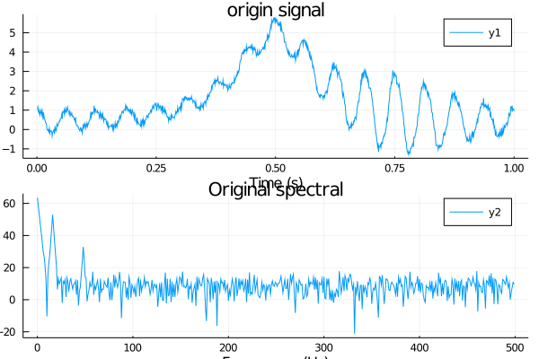
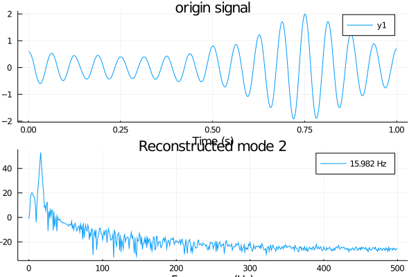
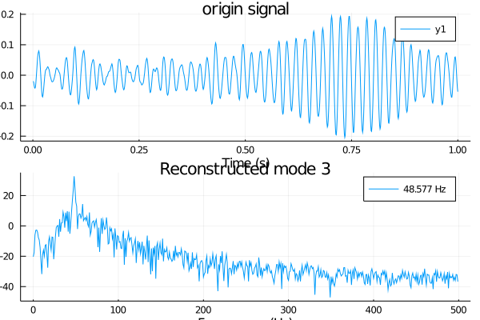

Example 3
The third synthetic signal has intrawave fre- quency modulation:
$f_{\mathrm{Sig} 3}(t)=\frac{1}{1.2+\cos (2 \pi t)}+\frac{\cos (32 \pi t+0.2 \cos (64 \pi t))}{1.5+\sin (2 \pi t)} $
The signal, its three constituent modes, and the composite Fourier spectrum are shown in Fig. 11. While the first, bell-shaped component has mostly low-pass content, the second mode’s main peak is clearly identified at $32\pi$ . However, due to the non-linear intrawave frequency modulation, an important amount of higher-order harmonics are also observed. This second component obviously violates the narrow-band assumption, and one would naturally expect some difficulties recovering this mode using VMD.
The corresponding VMD results are illustrated in Fig. 11. The non-zero $\omega_2$ quickly converges to the correct main frequency $32\pi$ . The higher order harmonics are not uniquely attributed to the second mode, however, but shared between both modes. Consequently, the intrawave frequency modulation is shared by both modes, creating some ripples in the otherwise low-fre- quency mode.
julia> using VMD,Random,Plots
julia> T = 1000;
julia> t = (1:T)/T;
julia> sample_frequency = 1000;
julia> # modes
v_1 = @. 1.0/(1.2+cos(2π*t))
1000-element Array{Float64,1}:
0.4545495329175559
0.45456176831196904
0.4545821615630583
0.4546107140615579
0.4546474277547602
0.454692305146782
0.45474534929890503
0.4548065638299934
0.4548759529169864
0.45495352129546823
⋮
0.4548065638299934
0.45474534929890503
0.454692305146782
0.4546474277547602
0.4546107140615579
0.4545821615630583
0.45456176831196904
0.4545495329175559
0.45454545454545453
julia> v_2 = @. cos(32π*t+0.2cos(64π*t))
1000-element Array{Float64,1}:
0.9563643791457606
0.9267577544454604
0.8932381241846964
0.857269028355134
0.8197510155751393
0.7810391828255306
0.7409958433212279
0.6990632628481571
0.6543460010702756
0.6056977932415857
⋮
0.6882039341995528
0.7830825598010769
0.8618432690171852
0.9228081034437001
0.9655120910629869
0.9906456805109204
0.9998552388456428
0.9954490548970377
0.9800665778412418
julia> v_3 = @. 1.5+sin(2π*t)
1000-element Array{Float64,1}:
1.5062831439655588
1.5125660398833527
1.5188484397154083
1.5251300954433376
1.5314107590781283
1.5376901826699345
1.5439681183178648
1.5502443181797696
1.5565185344820245
1.5627905195293135
⋮
1.4497556818202297
1.456031881682135
1.4623098173300648
1.4685892409218717
1.474869904556662
1.481151560284592
1.487433960116647
1.4937168560344412
1.4999999999999998
julia> # composite signal, including noise
f = v_1 + v_2./v_3 + 0.1*randn(length(v_1));
julia> # some sample parameters for VMD
alpha = 2000; # moderate bandwidth constraint
julia> tau = 0; # noise-tolerance (no strict fidelity enforcement)
julia> K = 4; # 3 modes
julia> DC = false; # no DC part imposed
julia> init = 0; # initialize omegas uniformly
julia> tol = 1e-7;
julia> v = vmd(f ; alpha = alpha,tau = tau,K = K,DC = false,init = init,tol = tol,sample_frequency = sample_frequency)
--iteration times 500 -- error 0.0006650980088188975
julia> # the first mode frequency
print("1st mode frequency $(n_mode(v,1))")
1st mode frequency 0.13897967734293806
julia> p0 = VMD.plot(v,k=0)
Plot{Plots.GRBackend() n=2}
julia> savefig(p0,"3_0.png")
julia> p1 = VMD.plot(v,k=1)
Plot{Plots.GRBackend() n=2}
julia> savefig(p1,"3_1.png")
julia> p2 = VMD.plot(v,k=2)
Plot{Plots.GRBackend() n=2}
julia> savefig(p2,"3_2.png")
julia> p3 = VMD.plot(v,k=3)
Plot{Plots.GRBackend() n=2}
julia> savefig(p3,"3_3.png")plot the original signal and spectrum

plot the 1st decomposed signal and spectrum

plot the 2st signal and spectrum

plot the 3st decomposed signal and spectrum
